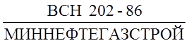
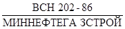
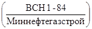
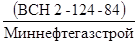
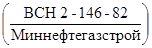
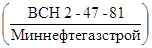
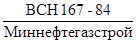
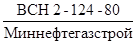
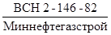
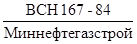

Ведомственные строительные нормы
ЗАВАРКА НА СТАДИИ
СТРОИТЕЛЬСТВА
ТЕХНОЛОГИЧЕСКИХ ОТВЕРСТИЙ
В МАГИСТРАЛЬНЫХ
ТРУБОПРОВОДАХ

МИНИСТЕРСТВО СТРОИТЕЛЬСТВА
ПРЕДПРИЯТИЙ
НЕФТЯНОЙ И ГАЗОВОЙ ПРОМЫШЛЕННОСТИ
ВСЕСОЮЗНЫЙ
НАУЧНО-ИССЛЕДОВАТЕЛЬСКИЙ ИНСТИТУТ
ПО СТРОИТЕЛЬСТВУ МАГИСТРАЛЬНЫХ ТРУБОПРОВОДОВ
Москва 1986
РАЗРАБОТАНЫ отделом технологии сварки магистральных и промысловых трубопроводов Всесоюзного научно-исследовательского института по строительству магистральных трубопроводов и Главвостоктрубопроводстроем Миннефтегазстроя
ВНЕСЕНЫ Всесоюзным научно-исследовательским институтом по строительству магистральных трубопроводов
УТВЕРЖДЕНЫ Заместителем министра строительства предприятий нефтяной и газовой промышленности Г.Н. Судобиным 20.01.1986 г.
СОГЛАСОВАНЫ Начальником технического управления О.М. Иванцовым
Начальником управления главного сварщика
О.М. Серафиным
Зам. начальника Главгосгазнадзора СССР А.Ф. Ериным
|
Министерство строительства предприятий нефтяной и газовой промышленности |
Ведомственные строительные нормы |
 |
|
|
Заварка на стадии строительства технологических отверстий в магистральных трубопроводах |
|||
|
Впервые |
|
1.1. Настоящие ведомственные строительные нормы распространяются на выполнение работ по заварке на стадии строительства технологических отверстий в магистральных трубопроводах, транспортирующих некоррозионноактивный продукт. Они дополняют и уточняют раздел «Вварка заплат» типовой Инструкции на производство огневых работ на действующих магистральных трубопроводах, газосборных сетях, промыслов и станций подземного хранения газа, транспортирующих природные и попутные газы (М., Мингазпром, 1971 г.).
1.2. Перед началом производства работ с учетом конкретной марки, типа трубной стали и диаметра трубопровода должна быть выбрана и согласована с заказчиком схема вырезки и заварки технологических отверстий.
1.3. Для труб с нормативным пределом прочности до 537 МПа и с толщиной стенки до 12 мм заварка технологических отверстий может осуществляться путем вварки заплат. Форма, размеры и ориентация отверстий и заплат, даны на рис. 1.
1.4. Для труб с нормативным значением предела прочности 537 МПа и выше, с толщиной стенки 12 мм и более заварка технологических отверстий должна производиться путем вварки в трубу патрубка с эллиптическим днищем (заглушкой) (рис. 2). Допускается вварка патрубка для герметизации отверстий в трубках с нормативным пределом прочности до 537 МПа и толщиной стенки до 12 мм.
Технологические отверстия для последующей герметизации за счет вварки патрубков или заплат рекомендуется вырезать в верхней части периметра труб с допустимым смещением от зенита до 30°. Отверстия выполняют по шаблону газовой резкой.
|
Внесены ВНИИСТом, отделом технологии сварки магистральных и промысловых трубопроводов |
Утверждены
|
Срок
введения в действие |
Рис. 1. Форма и ориентация отверстия, заплаты и подкладного кольца и схема разделки кромок под сварку:
1 - Рк - радиус подкладного кольца; 2 - подкладное кольцо; 3 - заплата; 4 - Ро - радиус отверстия в трубе; 5 - Рз - радиус заплаты; 6 - кронштейн
Рис. 2. Схема подготовки под сварку при заделке технологических отверстий с помощью патрубков:
1 - основная труба; 2 - подварочный слой
Торцы отверстия в основной трубе при последующей вварке заплат обрабатывают механическим способом в соответствии с данными рис. 1, при приварке патрубка зачищают механическим способом для ликвидации острых краев.
Перед засыпкой трубопровода необходима установка бетонных колец, предохраняющих патрубок от механических повреждений.
1.5. Вырезку технологических отверстий в основной трубе в случае последующей вварки патрубков следует осуществлять таким образом, чтобы отверстие было на 10 - 15 мм меньше внутреннего диаметра патрубка.
1.6. Место вырезки технологического отверстия должно находиться на расстоянии не менее 250 мм от заводского или кольцевого сварного шва.
1.7. Заплаты рекомендуется изготавливать заранее в стационарных условиях из отдельного участка трубы тех же диаметров, толщины стенки и класса прочности стали, что и основная труба. Размеры заплат не должны превышать 250´350 мм и быть меньше 100´150 мм. Разница между шириной и длиной заплаты должна быть не менее 50 мм. Ро, Рз, Рк устанавливают в зависимости от длины и ширины заплаты. Кромки заплаты должны быть обработаны (зачищены) механическим способом (размеры заплат даны на рис. 1).
1.8. Патрубки должны быть изготовлены
заранее из труб диаметром не выше 0,3 от диаметра основной трубы, но не более
325 мм с толщиной стенки не более 16 мм. Максимальный размер патрубка для
конкретной трубы определяют из условия установки через него резинового
шара. Конструктивное и материальное исполнение врезок патрубков должно
соответствовать требованиям табл. 3 «Тройники
и тройниковые соединения из стальных труб Ру
5,5 и 7,5 МПа» 
1.9. Торец ввариваемого патрубка должен быть обрезан по шаблону и иметь разделку кромок 50° с притуплением 1,5 - 2,0 мм. Торец патрубка, привариваемого к днищу, должен быть подготовлен механическим способом с углом разделки кромок 30° (см. рис. 2).
1.10. При наличии избыточного давления газа внутри трубы рекомендуется заварку технологических отверстий патрубками с днищем производить на технологической подкладке (рис. 3).
1.11. Технологические подкладки изготавливают из низкоуглеродистой стали, например ВСт2, Ст10 и т.д. толщиной 2 - 3 мм.
Форма и размеры технологических подкладок представлены на рис. 3.
Рис. 3. Технологическая подкладка, применяемая при вварке патрубков (половина полной подкладки)
1.12. Перед прихваткой и сваркой
внутренняя полость трубы в месте производства работ должна быть освобождена от
воды и грязи. Прихватка и вварка подкладных колец, технологических подкладок, заплат
и патрубков допускается только при положительных температурах металла трубы и
патрубка. Температура предварительного подогрева должна соответствовать
требованиям Инструкции по технологии сварки магистральных трубопроводов 
Равномерный подогрев места вварки заплат или патрубка обеспечивают специальными подогревателями.
Если подогрев не нужен по условиям сварки при температуре окружающего воздуха +5 °C и ниже, производят просушку участка трубы с технологическим отверстием.
1.13. При сборке рекомендуется вначале к заплате прихватить подкладное кольцо, затем заплата с подкладным кольцом должна быть вставлена в отверстие, прихвачена и приварена сплошным швом.
Величина превышения (смещения) кромок заплаты по отношению к трубе не должна превышать 1,5 мм. Для удобства сборки допускается прихватка к свариваемым торцам временных технологических кронштейнов (см. рис. 1) из электродных стержней, которые должны быть удалены механическим путем, после прихватки заплаты.
1.14. При вварке патрубка с использованием технологической подкладки первоначально следует разметить отверстие, вставить одну половину подкладки и прихватить, вставить вторую половину подкладки, прихватить, а затем проварить их сплошным швом по периметру технологического отверстия и стыку подкладки, оставив центральное отверстие подкладки свободным.
При сборке можно использовать проволочные кронштейны.
Центральное отверстие следует загерметизировать (например, глиной), но таким образом, чтобы при подъеме давления в основной трубе до рабочего отверстия разгерметизировались.
1.15. Сварочно-монтажные работы по вварке заплат и патрубков следует производить за один рабочий цикл без перерывов до полного завершения облицовочного шва.
Температура предыдущего слоя перед наложением последующего слоя шва должна быть не ниже +100 °C.
Если температура опустилась ниже +100 °C, следует произвести подогрев на +100 - +150 °C.
Отдельные слои шва должны выполняться в последовательности, указанной на рис. 4.
1.16. Приварку патрубков следует осуществлять не менее чем в три слоя с подваркой изнутри трубы, а облицовочный слой шва рекомендуется выполнять двумя валиками с последующей зачисткой шлифмашинкой.
1.17. Сварка должна производиться электродами с основным видом покрытия, рекомендованными Инструкцией [1] для основной трубы данной категории прочности. Сварку заполняющих слоев шва целесообразно производить электродами диаметром 3,0 - 3,25 мм. При этом могут быть использованы электроды той же категории прочности, что и рекомендованные Инструкцией для сварки корневого слоя шва.
1.18. После приварки патрубков необходимо проведение отпуска с нагревом сварного соединения до +200 °C и последующим охлаждением под теплоизолирующим поясом до полного остывания.
При вварке заплат последующий подогрев не нужен, но место ремонта укрывается теплоизолирующим поясом. В процессе охлаждения попадание влаги на сварное соединение не допускается.
1.19. Последней операцией при вварке патрубка является прихватка и приварка эллиптической заглушки к патрубку.
Заглушка должна быть прихвачена и приварена не менее чем в три слоя сплошным швом к патрубку электродами с основным видом покрытия диаметром 2,5 - 3,25 мм, рекомендованными Инструкцией для сварки корневого слоя шва. Перед сваркой торцы патрубка и заглушки необходимо просушить.
1.20. При выполнении работ представители заказчика и исполнителя должны осуществлять операционный контроль на следующих этапах:
подготовке отверстия, заплаты, патрубка, подкладного кольца, заглушки;
сборке и прихватке подкладного кольца;
приварке заглушки;
предварительном подогреве;
cборке и прихватке заплаты, патрубка;
сварке заплаты, патрубка;
мерах по предупреждению быстрого остывания.
Рис. 4. Последовательность выполнения отдельных слоев шва при сварке заплат и патрубков (четырьмя участками протяженностью 100 - 200 мм каждый):
а - сварка нечетных слоев; б - сварка четных слоев; Н - начало сварки; К - конец сварки
1.21. Сварные швы должны быть
проконтролированы радиографическим способом в соответствии с «Инструкцией по
радиографическому контролю сварных соединений трубопроводов различного
диаметра»   
Непровары в сварном соединении не допускаются. Контроль УЗК следует осуществлять как со стороны трубы, так и со стороны патрубка.
1.22. При недопустимых дефектах сварное соединение ремонту не подлежит. Участок трубы вырезается и на его место вваривается катушка длиной не менее диаметра основной трубы.
1.23. По окончании работ по вварке патрубка и заглушки составляется акт специальной формы (форма прилагается).
1.24. Техника безопасности должна соответствовать требованиям «Типовой инструкции на производство огневых работ на действующих магистральных трубопроводах, газосборных сетях, промыслов и станций подземного хранения газа, транспортирующих природные и попутные газы».
|
________________________ Строительство _________________ Министерство _______________________ ______________________________ Трест ______________________________ СМУ (СУ) _____________ Участок _______________ АКТ
|
1. Инструкция по технологии сварки магистральных трубопроводов 
2. Инструкция по радиографическому контролю сварных соединений
трубопроводов различного диаметра 
4. Инструкция по технологии сварки при выполнении специальных монтажных
работ на строительстве трубопроводов 